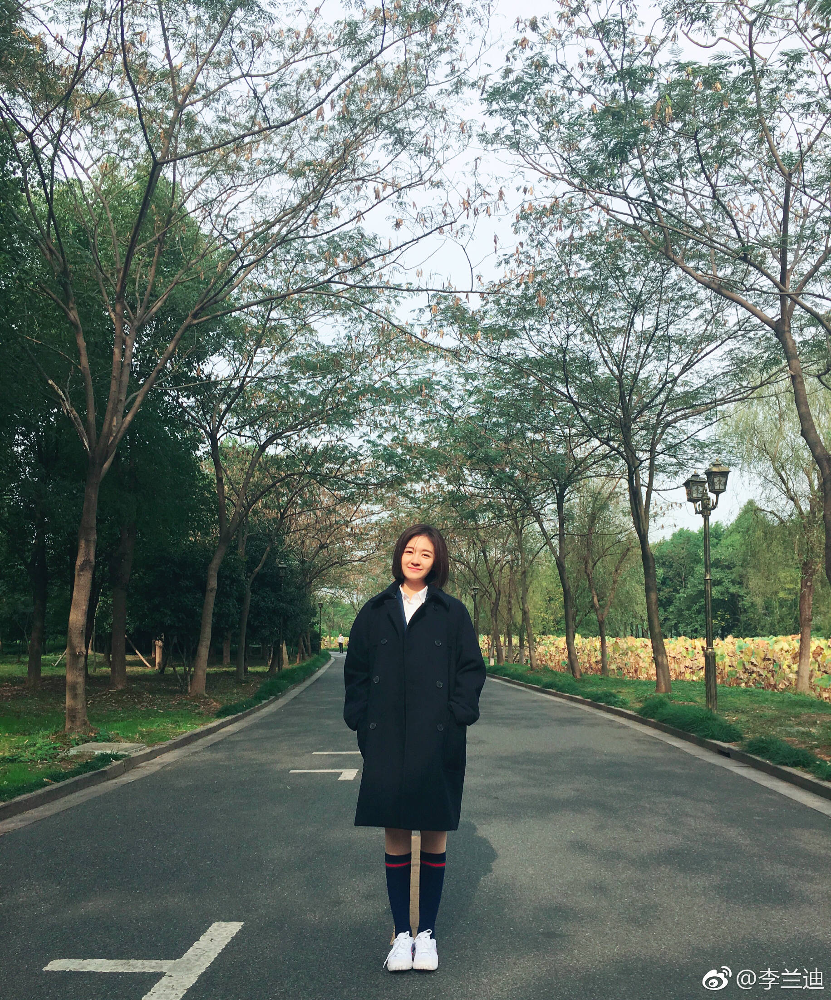

李兰迪，1999年9月2日出生于北京，中国内地影视女演员。
2009年，10岁的李兰迪拍摄个人首部电影《爱你输给了谁》，涉足荧屏。2012年，参与拍摄都市情感剧《亲爱的，回家》 。2013年，出演动作片《富春山居图》中的小桂花。2015年，与朱梓骁合作主演都市爱情剧《闪亮茗天》。2016年，出演都市爱情偶像剧《远得要命的爱情》中的善良女孩瑶瑶受到大众关注 ；6月，凭借儿童励志电影《少年棋王》获得最具潜力儿童女演员奖 ；8月，确认出演民国玄幻网络剧《无心法师第二季》中的苏桃一角 ；同年，担任网络剧《秘果》饰演于池子 。